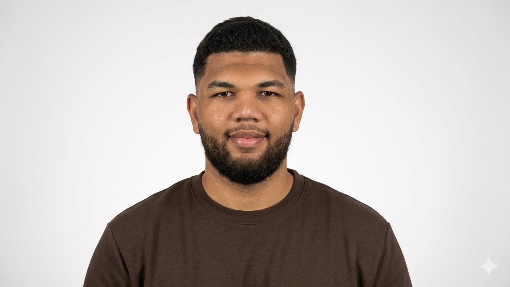

À Propos de moi

Bonjour, je suis Redouane Assani, alternant en administration et sécurité des réseaux, actuellement en 2ème année de BTS SIO option SISR au Lycée privé Saint Marc (Bourgoin-Jallieu).
J'ai effectué ma première année de BTS SIO SISR en parcours initial au Lycée Le Castel (Dijon), avant de rejoindre l'alternance. J'y ai acquis des bases solides en administration système et réseaux, que j'approfondis aujourd'hui en environnement professionnel.
En alternance chez Numerik's Pro (Bourgoin-Jallieu), je gère au quotidien des parcs informatiques clients, des pare-feux WatchGuard et du support technique à distance et sur site. Je suis à la recherche d'une alternance pour 2026-2027 dans le cadre d'une Licence Pro Administration et Sécurité des Réseaux.
Compétences
Réseaux
Modèle OSI, TCP/IP, VLAN, Routage, Stormshield, Wi-Fi 802.1X
Systèmes
Windows Server, Linux (Debian/Ubuntu), Virtualisation (VirtualBox, Proxmox)
Sécurité
Firewall, VPN, Active Directory, NPS/RADIUS, gestion des droits
Outils
Cisco Packet Tracer, Wireshark, Active Directory, Rsyslog
Langues
🇫🇷 Français — Langue maternelle | 🇬🇧 Anglais — Niveau B2+ | 🇪🇸 Espagnol — Niveau A2+
Centres d'intérêt
🏉 Rugby — Sport de haut niveau
15 ans de pratique du rugby, dont un parcours au sein du centre de formation du CSBJ Rugby. Cette expérience m'a permis de développer une grande rigueur, un fort esprit d'équipe et une excellente gestion du temps entre exigences sportives et académiques.
💻 Technologies & Gaming
Passionné par l'informatique et l'univers du jeu vidéo, je pratique une veille technologique régulière sur les évolutions matérielles et logicielles.
Mon CV & Contact
Vous souhaitez en savoir plus sur mon parcours professionnel ?
📄 Télécharger mon CVPour me contacter directement : Page Contact